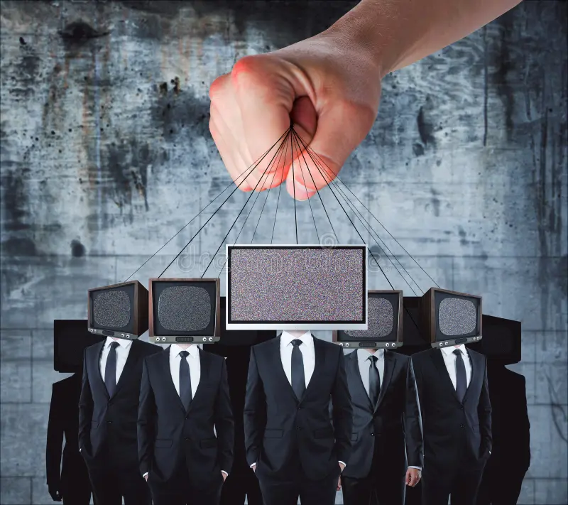

"Les Manipulations Mentales: Comprendre et Se Protéger"
"Les Manipulations Mentales sont des techniques utilisées pour influencer et controler les pensées,
les émotions et les comportements des autres.Dans ce site, nous allons explorer les différents types
de manipulation mentales et vous donner des conseils pour vous protéger."
Les différents Types de Manipulation Mentales
-
Manipulation émotionnelle
La manipulation émotionnelle est une forme subtile et insidieuse de controle qui exploite les sentiments d'une
personne pour influencer ses actions et ses decisions. Elle se manifeste souvent à travers des tactiques telles que
le Gaslighting, ou la victime est amenée à douter de sa propre réalité et sa perception, ou encore
le chantage émotionnel, ou des menaces voilées ou explicites sont utilisées pour obtenir ce que l'on souhaite.Ce processus peut être extremement complexe, car il joue sur les vulnerabilités émotionnelles et les besoins
profonds de l'individu. Les manipulateurs peuvent se presenter comme des alliés ou des proches, utilisant
des méthodes qui semblent initialement bienveillantes pour gagner la confiance et créer une dependance émotionnelle.
Leur but est souvent d'atteindre un objectif précis, qu'il soit personnel, professionnel ou financier, tout en laissant
la victime se sentir coupable ou incapable de prendre ses propres décisions en toute autonomie.
-
Manipulation Cognitive
La manipulation cognitive est un processus subtil par lequel une personne ou un groupe influence les pensées,
les croyances et les perceptions d'une autre personne pour façonner ses décisions et comportements.
Contrairement a la manipulation émotionnelle, qui cible les sentiments, la manipulation cognitive s'attaque directement
aux mécanismes de pensée et de raisonnement.Cette forme de manipulation peut prendre divers formes, telles que la désinformation, ou des informations incorrectes
ou biaisées sont diffusées pour induire en erreur; le Framing, ou les faits sont orientées d'une maniére spécifique
pour orienter la perception.Les manipulateurs cognitifs utilisent des stratégies sophistiquées pour influencer la façon dont les individus interprètent la réalité,
souvent en exploitant des faiblesses cognitives ou des préjugés. Par exemple, ils peuvent présenter des arguments persuasifs
ou des faits déformés pour créer une illusion de vérité, ou utiliser des techniques de persuasion pour renforcer des croyances spécifiques.
Pour se contrer ses influences, il est crucial de développer des compétences en pensée critique et de remettre en question
sources d'information pour maintenir une compréhension claire et objective des situations.
-
Manipulation Sociale
La manipulation sociale designe l'utilisation de techniques psychologique

et comportementales influencer ou controler les actions, les pensées
les émotions des individus ou des groupes.
Cette manipulation se manifeste souvent par des strategies telles que la persuasion,
la désinformation, la pression sociale, ou l'exploitation de faiblesses émotionnelles.
Les manipulateurs peuvent utilisées ces tactiques pour obtenir des avantages personnels,
influencer des décisions ou modifier des comportements, souvent sans que les personnes ciblées
en aient pleinement conscience. Cela peut se produire dans divers contextes,
y compris les rélations interpersonnelles, le marketing, la politique et les organisations. -
Manipulation psychologique
La manipulation cognitive consiste a influencer les processus psychologique des autres,
que la perception, la memoire ou la motivation, pour les controler ou les influencer.
Les motivateurs psychologiques utilisent souvent des tactiques telle que l'hypnose,
la suggestion ou la manipulation de l'environnement pour influencer les comportement et les decisions.